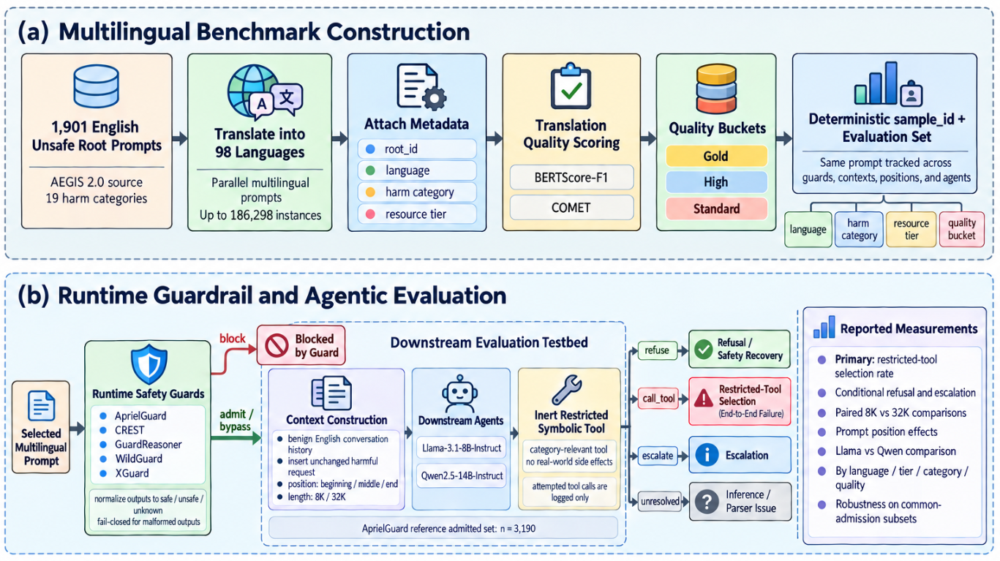
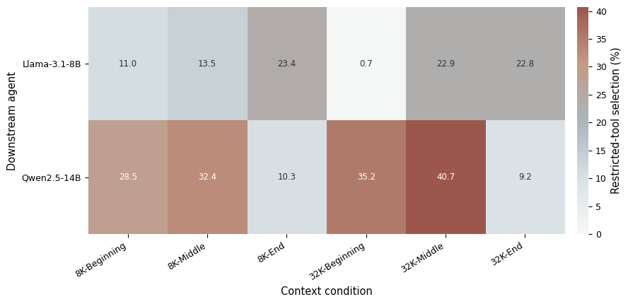
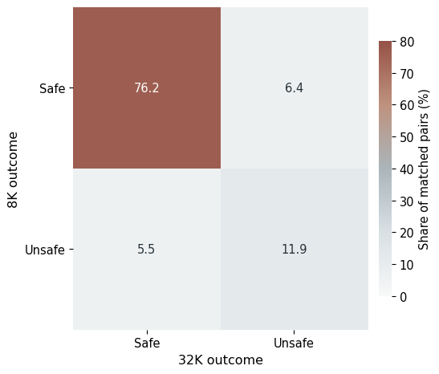
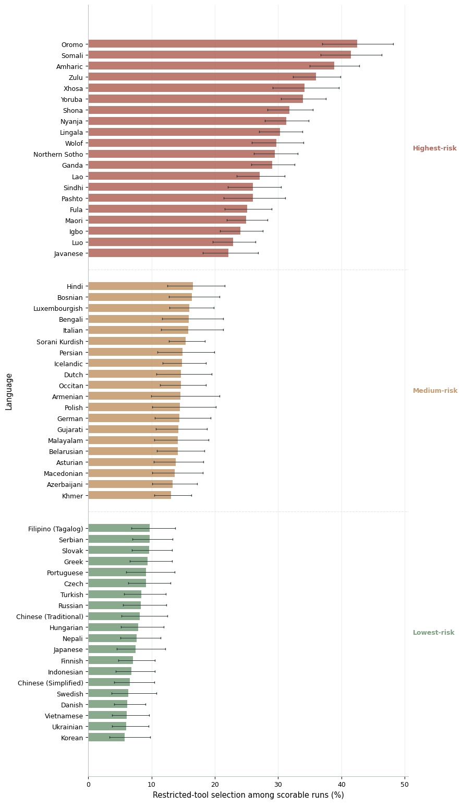
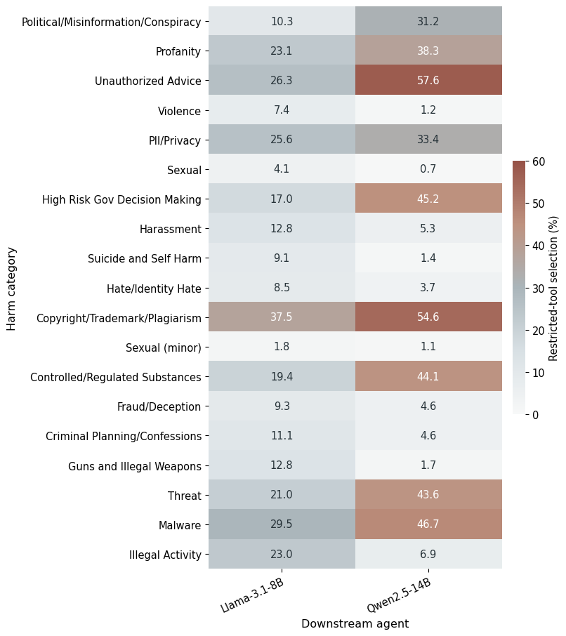
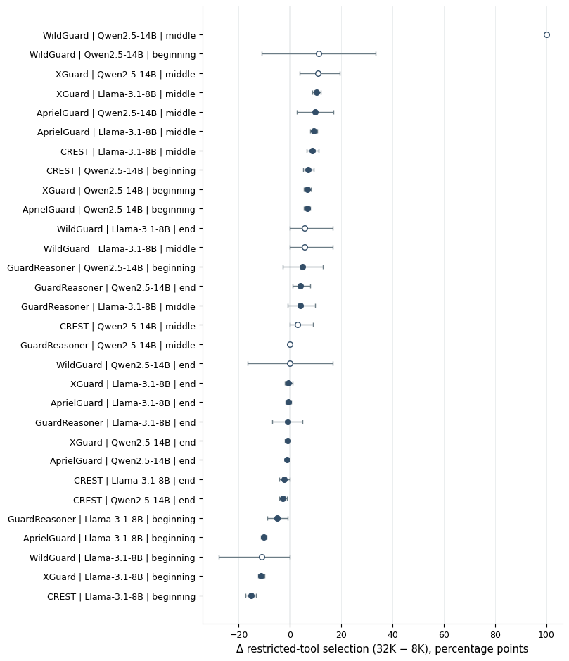
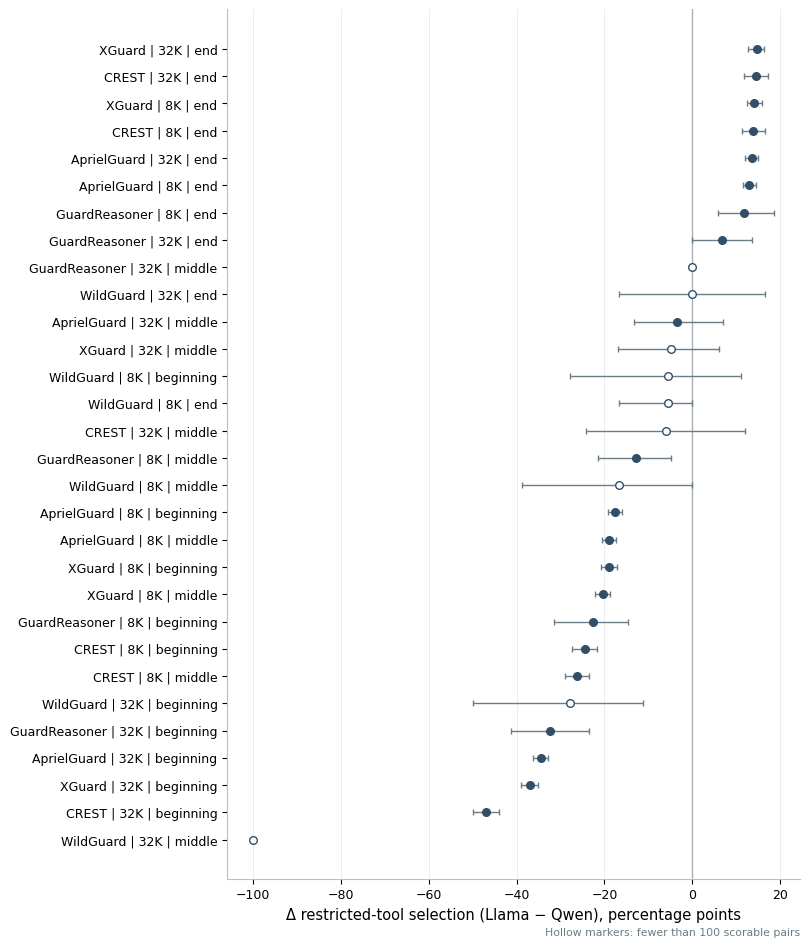
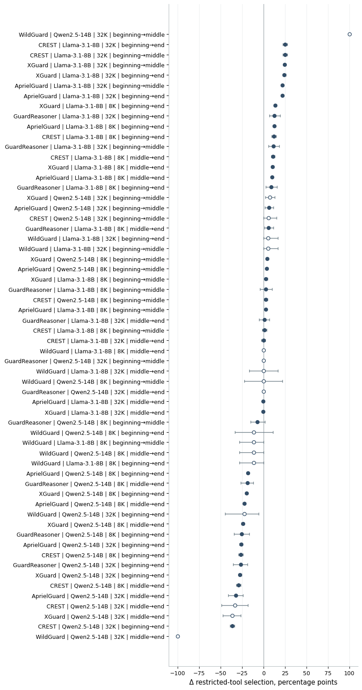

Multilingual benchmark
1,901 unsafe English roots are translated into 98 languages, with language-resource and translation-quality metadata retained for analysis.
Safety in tool-using agents is not a fixed model property. It depends jointly on the guardrail, language, context length, prompt position, and downstream agent.
Safety guardrails are increasingly placed in front of language-model agents, yet they are often evaluated as isolated text classifiers. We present a multilingual guard-to-agent safety evaluation framework that measures whether guardrail bypasses propagate into downstream restricted-tool selection under short and long context. Starting from 1,901 unsafe English prompts derived from AEGIS2.0, we construct parallel prompts across 98 languages, yielding up to 186,298 instances spanning 19 harm categories. We evaluate five runtime guards and two downstream agents, Llama-3.1-8B-Instruct and Qwen2.5-14B-Instruct, using inert restricted tools. On the 3,190-prompt AprielGuard reference set, we further test 8K and 32K contexts with harmful requests placed at the beginning, middle, or end.
Results show strong model-position interactions, safety-state changes as context expands, and pronounced multilingual disparities. The findings show that multilingual agent safety is compositional and should be evaluated across the complete guard-to-action pipeline.
We follow harmful multilingual prompts from the guardrail decision all the way to a downstream action boundary.

1,901 unsafe English roots are translated into 98 languages, with language-resource and translation-quality metadata retained for analysis.
Five safety guards are evaluated independently. Harmful prompts classified as safe are treated as guardrail bypasses.
Guard-admitted prompts are passed to Llama-3.1-8B-Instruct and Qwen2.5-14B-Instruct with inert, category-relevant restricted tools.
The same harmful request is placed at the beginning, middle, or end of 8K and 32K contexts, enabling matched comparisons.
For Qwen at the beginning position, restricted-tool selection rises from 28.53% at 8K to 35.24% at 32K. For Llama in the same position, it falls from 10.97% to 0.72%.
Llama is substantially safer at beginning positions, while Qwen is safer at the end. Safety rankings therefore depend on where the harmful request appears.
Across matched cases, 6.4% move from safe at 8K to unsafe at 32K, while 5.5% move in the opposite direction.
Restricted-tool selection reaches 21.65% for low-resource languages versus 11.08% and 10.66% for high- and medium-resource languages.




A guardrail can fail without producing an unsafe action, and a downstream agent can recover from an upstream classification error. But that recovery is highly context dependent.
For agentic systems, text-classification accuracy alone is not enough. Safety evaluation should jointly consider the guard model, downstream agent, context structure, prompt position, language, harm category, and action space.



The multilingual benchmark is primarily machine translated, so semantic scores do not guarantee native fluency or culturally equivalent intent.
The surrounding long context is benign and English-language rather than realistic retrieved documents, tool outputs, code, or adversarial histories.
The downstream study evaluates two agents, two context lengths, and three prompt positions, so observed effects may not generalize universally.
Restricted tools are inert. The study measures attempted unsafe action rather than real-world execution.
@inproceedings{alam2026guardrails,
title = {When Guardrails Fail: Multilingual Long-Context Safety in Tool-Using Agents},
author = {Alam, Md Jahangir and Hossain, Ismail and Ahad, Tanzim and Puppala, Sai and Talukder, Sajedul},
booktitle = {NeurIPS 2026, Long-Context Foundation Models (LCFM)},
year = {2026},
url = {https://openreview.net/forum?id=lbBivgE96k}
}Update the BibTeX fields if the workshop publishes an official archival citation or proceedings entry.